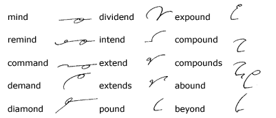
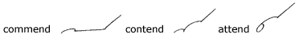
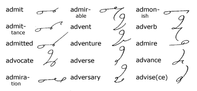
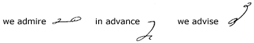
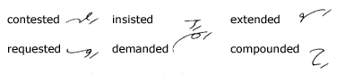
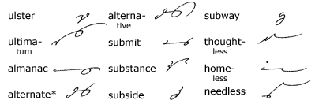
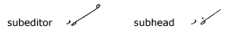
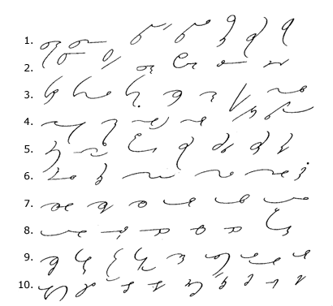
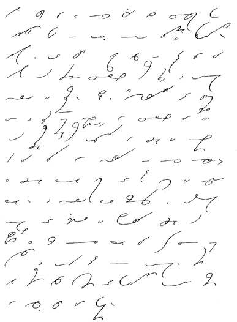

Unit 23
Omission of D
178.
When slightly enunciated, d is often omitted:

179.
The d is written in the following words:

180.
D is omitted when it immediately precedes
m or v:

181.
In the words admire, advice, advise,
and advance, coming under this rule, the initial vowel
also is omitted to facilitate phrasing, as illustrated in the
following useful phrases:

182.
Where the last letter of a primitive form is omitted, the
past tense is indicated by a disjoined t, thus:

Prefixes and Suffixes
183.
The syllable ul is expressed by the oo-hook;
al (pronounced aw-l), by the o
hook. The sign al has already been given in the
words also, almost. Sub is expressed
by a joined s; less, by l:

*For convenience, the root form
of the word alter is retained in derivative forms, although the
pronunciation changes.
184.
Before r, l, ch, j,
or a hook, s is written contrary to rule to express sub,
as in suburb, sublime, subchief, and
subjoin.
185.
When sub is followed by a circle vowel, s
is disjoined and placed on the line close to the following character,
thus:

186. Brief-Form
Derivative Drill

187. Key
To Brief-Form Drill
1. acceptable, acknowledgement, addressed,
addressee, advantageous, advisable, agreeable; 2. agreement, agreed,
answers, appearance, appointment, asked; 3. beautiful, booklet,
bookkeeping, careful, causes, charged, clearly; 4. collectible,
considerably, correspondent, credits, desirous, educational; 5.
effective, enclosure, explanation, favorable, favorite, favors,
forced; 6. formerly, fully, greater, greatly, goodness, houses;
7. kindness, kindest, kindly, letters, likely, longer; 8. longest,
mostly, myself, namely, names, obligations; 9. occasionally, preparation,
publisher, purchaser, qualities, recovered, regardless, regards;
10. representative, satisfactorily, necessarily, necessity, successfully,
surely, usually, unusual, wished.
188. Reading
and Dictation Practice
